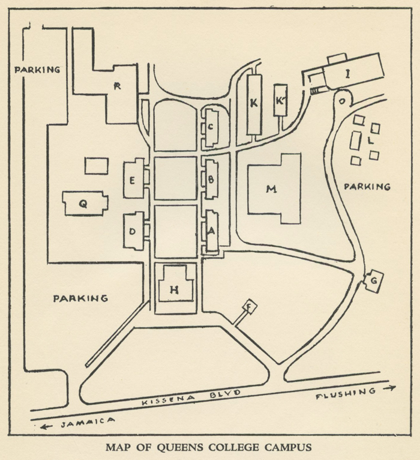

Campus Map
1970

Jefferson Hall
Academic II
Administrative Offices
School of General Studies
Adult Continuing Education (ACE)
Program
Department of Art, Classical, and
Oriental Languages
German and Comparative Literature
Center for International Educational Education
English Language Institute
Charles S Colden Center of Music and Speech
Rufus King Hall (Communication Arts
and Sciences Wing)
Samuel Gertz Speech and Hearing
Center
Colden Auditorium and Queens College
Theatre
Karol Rathaus Hall (Music Wing)
Queens College Dining Hall
College Memorial Center
Lounges and Student Organization Offices
Heating Plant
Maurice FitzGerald Gymnasium
Department of Health and Physical
Education
Social Science Building
Departments of Anthropology, Economics,
Education, History, Philosophy, Political
Science, Sociology, Student Personnel
Architectural and Engineering
Paul Klapper Library
Graduate Biology Laboratories
Department of Physics
Art Studios
Annex
Department of Biology
Ira Remsen Hall
Departments of Chemistry, Geology,
Home Economics, Psychology
Temporary II
Temporary I
Temporary III
Psychology Laboratories and Machine
Shop
City University Mutual Benefit
Instructional Network (CUMBIN)
Electrical Industries Building (E1B), 185-11 Jewel Avenue
Biology, Geology, Home Economics
Laboratories
Off-campus Buildings, 61 Road
Institute for Community Studies
Latin American Area Studies